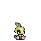
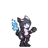
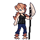
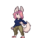
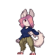

Monster Example

- Download Default Monster (Saplee) for Spriters
- Used for spriters, contains every animation used per the Texture Replacement Plugin
- All of them are OPTIONAL. If one is lacking, the default will be used. Some are not used per the Game (Walk, Run or Glitch per example)
- You can get the original from the developper or use Asset Ripper from Unity. Snrasha can also send them to you
Waifus
 
 


- Download Waifu sprites
- Contains some replacement of monsters